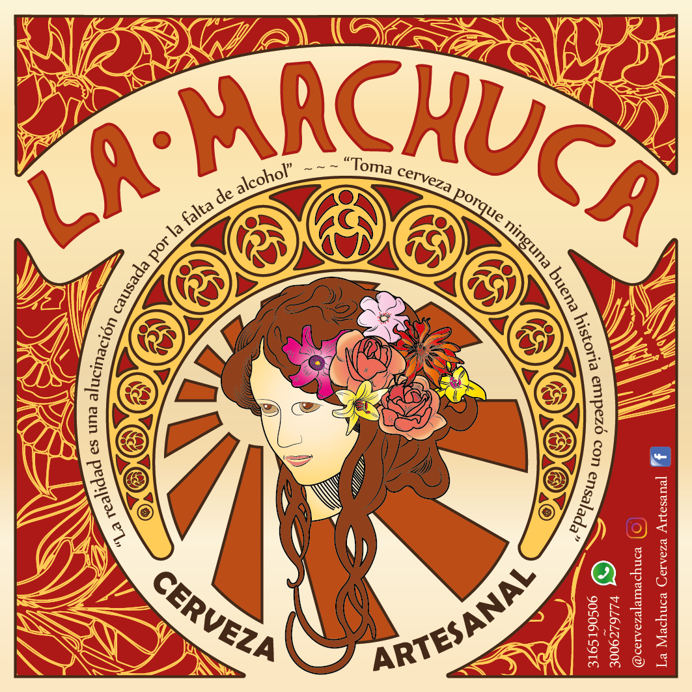

Descripción de la cerveza
Cerveza elaborada con agua, lúpulo, levadura, malta e ingredientes seleccionados según su estilo. Producción totalmente artesanal, sin filtar ni uso de productos químicos, cualidades que la hacen una cerveza turbia.
Presentaciones
Porter Oscura, sabor intenso a malta tostada y amarga con notas a café y chocolate, otorgándole una impresión ahumada.
Ambar Pale Ale, color ambar intenso de espuma blanca, es refrescante con notas caramelizadas y sabor maltoso que perdura hasta el final del trago trasmitiendo la calidez del alcohol.
Dorada, color dorado de espuma blanca y sabor prolongado y especiado. Es ligeramente dulce con notas de miel y pan, con aroma a hierbas y cítricos. Amargor medio amaderado.
